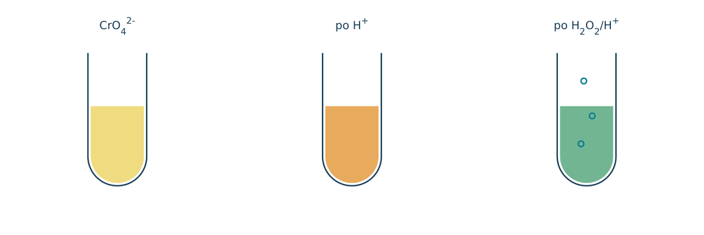
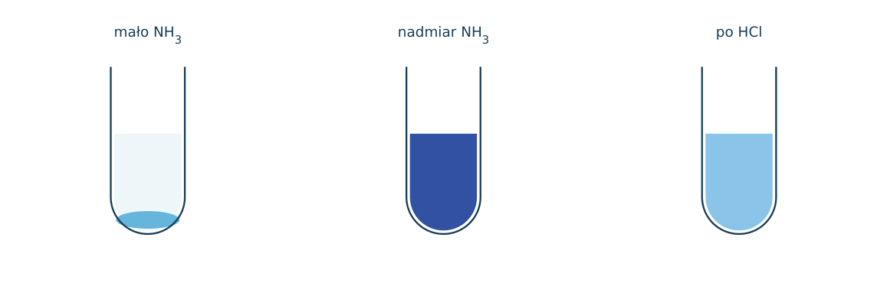
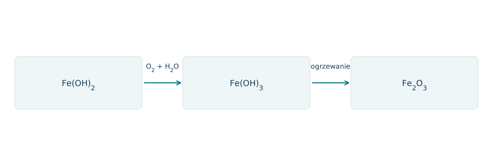
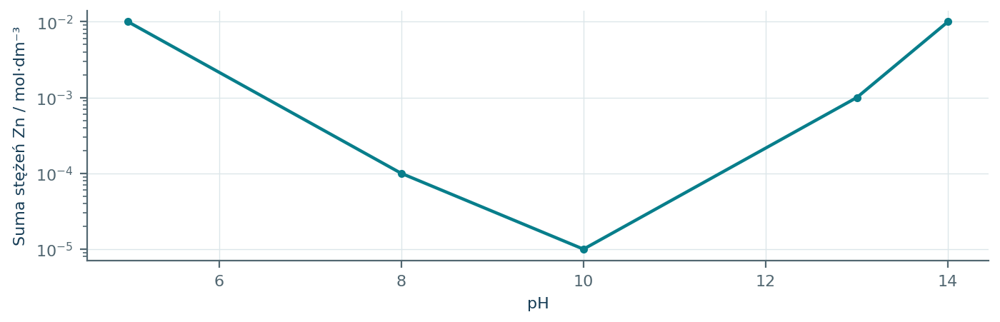
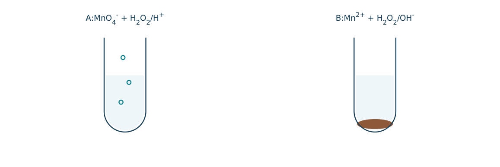
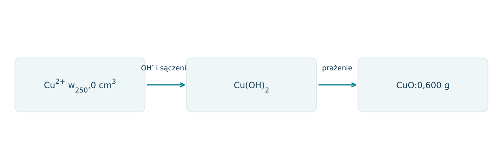
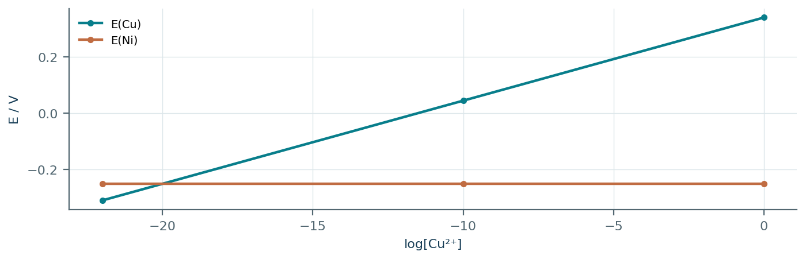
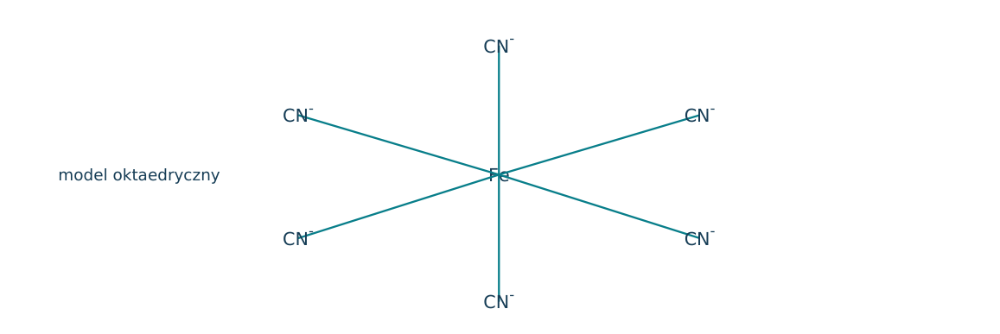
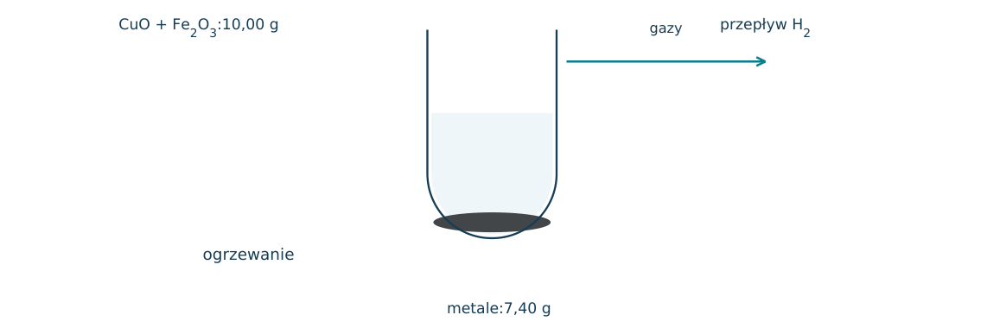
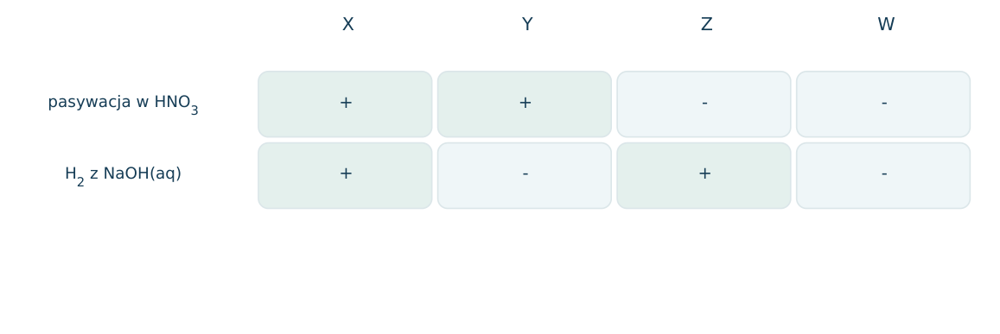

14.01 · 1 pkt
Podaj konfiguracje skrócone jonów Cu2+ i Zn2+.
Rozwiązanie
- Cu2+: [Ar] 3d9; Zn2+: [Ar] 3d10.
50 zadań · 114 pkt · odpowiedzi rozwijane po samodzielnej próbie
← KatalogZadania PDFRozwiązania PDFDane do obliczeń: H 1; C 12; N 14; O 16; Na 23; Mg 24; Al 27; P 31; S 32; Cl 35,5; K 39; Ca 40; Cr 52; Mn 55; Fe 56; Cu 64; Zn 65; Ag 108; Br 80; I 127; Ba 137 (g/mol). NA = 6,02·1023 mol-1. Vm = 22,4 dm3/mol w warunkach normalnych (0°C, 1013 hPa). W 25°C Kw = 10-14. Dane podane w zadaniu mają pierwszeństwo.
Podaj konfiguracje skrócone jonów Cu2+ i Zn2+.
Oceń zdania A i B, wpisując P albo F. Każde zdanie fałszywe popraw lub krótko uzasadnij. A: Zakwaszenie CrO42- może prowadzić do Cr2O72-. B: W tej przemianie Cr zmienia stopień utlenienia z +VI na +III.
Podaj barwy CrO42-, Cr2O72- i MnO4-.
W kompleksie [Cu(NH3)4]2+ wskaż atom centralny, ligandy i liczbę koordynacyjną w podanym uproszczonym wzorze.
Napisz równanie reakcji: FeSO4 z NaOH bez dostępu tlenu. Podaj obserwację.
Napisz równanie reakcji: FeCl3 z NaOH. Podaj obserwację.
Napisz równanie reakcji: CuCl2 z NaOH. Podaj obserwację.
Napisz równanie reakcji: ZnSO4 z niewielką ilością NaOH. Podaj obserwację.
Napisz równanie reakcji: Zn(OH)2 z nadmiarem wodnego NaOH. Podaj obserwację.
Napisz równanie reakcji: Cr(OH)3 z nadmiarem NaOH; przyjmij kompleks [Cr(OH)6]3-. Podaj obserwację.
Napisz równanie reakcji: Fe z CuSO4(aq). Podaj obserwację.
Napisz równanie reakcji: Cu z AgNO3(aq). Podaj obserwację.
Napisz równanie termicznego rozkładu Cu(NO3)2 do CuO, NO2 i O2. Podaj barwę produktu stałego i gazu NO2.
Napisz równanie reakcji: CuO z H2 po ogrzaniu. Podaj obserwację.
Napisz równanie utleniania Fe(OH)2 przez tlen z powietrza do Fe(OH)3 i opisz zmianę barwy.
Napisz równanie jonowe rozpuszczania Cu(OH)2 w nadmiarze NH3, przyjmując [Cu(NH3)4]2-. Podaj barwę.
Po zakwaszeniu żółty roztwór chromianu(VI) staje się pomarańczowy. Napisz równanie równowagi.
Czy przemiana CrO42- w Cr2O72- po zakwaszeniu jest redoksem? Uzasadnij.
Do fioletowego MnO4- dodano reduktor w kwasie i otrzymano prawie bezbarwny roztwór. Podaj produkt redukcji i liczbę elektronów przyjętych na Mn.
Po redukcji MnO4- w obojętnym środowisku powstał brunatny osad. Podaj produkt i liczbę elektronów na Mn.
W silnej zasadzie MnO4- redukuje się do zielonego jonu. Podaj wzór produktu i półreakcję.
Jak rozróżnić roztwory FeCl2 i FeCl3 za pomocą NaOH? Podaj osady i barwy.
Jak rozróżnić Cu2+ i Zn2+ roztworem NaOH z użyciem nadmiaru odczynnika?
Dlaczego do strącenia Fe(OH)3 z FeCl3 nie jest potrzebny utleniacz?
Napisz równanie jonowe reakcji Zn z HCl.
Dlaczego Cu nie wydziela H2 z rozcieńczonego HCl, ale reaguje z HNO3?
Jak zachowuje się Fe wobec zimnego stężonego HNO3 w typowym doświadczeniu szkolnym?
Napisz reakcję Fe z rozcieńczonym HCl i podaj stopień utlenienia Fe w soli.
Do 0,050 mola Cu2+ dodano nadmiar NaOH. Oblicz masę Cu(OH)2, M=98 g/mol.
Z 0,10 mola Fe3+ strącono Fe(OH)3, następnie wyprażono do Fe2O3. Oblicz masę tlenku, M=160 g/mol.
Z 100 cm3 roztworu Fe3+ otrzymano po strąceniu i prażeniu 0,800 g Fe2O3. Oblicz c(Fe3+).
Ile moli NH3 potrzeba stechiometrycznie do utworzenia 0,020 mola [Cu(NH3)4]2+?
W [Fe(CN)6]4- ligand CN ma ładunek -1. Ustal stopień utlenienia Fe i liczbę koordynacyjną.
Kompleks [Co(NH3)6]3+ ma obojętne ligandy. Ustal stopień utlenienia Co i ładunek soli z trzema Cl- poza sferą koordynacyjną.
Dlaczego osad w analizie wagowej praży się do stałej masy i chłodzi przed ważeniem?
Roztwór niebieski po dodatku NaOH daje osad, który po ogrzaniu czernieje. Ustal kation i oba produkty stałe.
Osad X jest brunatny, a po prażeniu daje Fe2O3. Napisz wzór X i równanie prażenia w szkolnym uproszczeniu.
Roztwór Fe3+ zmieszano z Fe metalicznym. Czy powstanie wyłącznie więcej Fe3+? Uzasadnij równaniem.
Dla Cr2O72-+14H++6e-→2Cr3++7H2O określ wpływ dodania reduktora i oczekiwaną zmianę dominującej barwy.
Czy rozpuszczenie Zn(OH)2 w NaOH oznacza redukcję Zn? Podaj stopień utlenienia w osadzie i kompleksie.
Każdy numer 41-50 oznacza jedno zadanie główne; podpunkty są oceniane osobno.
Do żółtego CrO42- dodano H+, uzyskując pomarańczowy roztwór. Następnie H2O2 w kwasie przeprowadził Cr(VI) w Cr(III), z wydzieleniem O 2. Na schemacie pokazano oba etapy i barwy.

14.41.1 (2 pkt) Zapisz równanie pierwszego etapu i oceń, czy to redoks.
14.41.2 (2 pkt) Zbilansuj redukcję Cr2O72- nadtlenkiem w kwasie.
14.41.3 (1 pkt) Jaką rolę pełni H2O2 w drugim etapie i ile elektronów oddaje na cząsteczkę?
2CrO42-+2H+⇌Cr2O72-+H2O; nie, Cr ma+VI po obu stronach.
Cr2O72-+3H2O2+8H+→2Cr3++3O2+7H2O.
Reduktor; dwa elektrony na H2O2, bo oba atomy O: -I→0.
Dodawanie NH3 do Cu2+ początkowo daje niebieski osad, później w nadmiarze NH3 szafirowy roztwór. Przyjmij uproszczony kompleks [Cu(NH3)4]2+. Zakwaszenie kompleksu odtwarza uwodniony Cu2+ oraz NH4+.

14.42.1 (2 pkt) Zapisz reakcję rozpuszczania Cu(OH)2 w NH3 i podaj liczbę ligandów.
14.42.2 (1 pkt) Zapisz uproszczoną reakcję kompleksu z H+.
14.42.3 (1 pkt) Czy zmiany barw wymagają zmiany stopnia utlenienia Cu? Uzasadnij.
Cu(OH)2+4NH3⇌[Cu(NH3)4]2++2OH-; cztery ligandyNH3.
[Cu(NH3)4]2++4H+→Cu2++4NH4+.
Nie, Cu pozostaje+II; zmienia się zestaw ligandów i otoczenie koordynacyjne.
Z 0,0100 mola Fe2+ strącono świeży Fe(OH)2 bez dostępu tlenu. Następnie osad utleniono tlenem do Fe(OH)3, a na końcu wyprażono do Fe2O3. Pomiń wodę fizycznie zaadsorbowaną i przyjmij podane idealne wzory.

14.43.1 (2 pkt) Zapisz dwa równania przemian i wskaż etap redoks.
14.43.2 (1 pkt) Oblicz masę końcowego Fe2O3.
14.43.3 (1 pkt) Oblicz minimalne zużycie O 2 w pierwszym etapie i V w warunkach normalnych.
4Fe(OH)2+O 2+2H2O→4Fe(OH)3;2Fe(OH)3→Fe2O3+3H2O; redoks pierwszy.
n=0,00500 mol; m=0,800 g.
nO2=0,0100/4=0,00250 mol; V=56,0 cm3.
Wykres przedstawia sumę rozpuszczonych form Zn w obecności osadu Zn(OH)2. W kwasie dominuje Zn2+, w silnej zasadzie [Zn(OH)4]2-. Jest to schemat jakościowo-ilościowy zadanych danych, nie uniwersalna krzywa dla każdego roztworu.

14.44.1 (2 pkt) Napisz równania rozpuszczania osadu przy obu skrajnych pH.
14.44.2 (1 pkt) Dlaczego wzrost rozpuszczalności przy wysokim pH nie wynika z samego efektu wspólnego OH-?
14.44.3 (1 pkt) Ile moli OH- potrzeba stechiometrycznie, by0,0200 mola Zn2+ przeprowadzić całkowicie w tetrahydroksokompleks?
Zn(OH)2+2H+→Zn2++2H2O; Zn(OH)2+2OH-→[Zn(OH)4]2-.
Sam wspólny jon sprzyjałby osadowi; wzrost powoduje tworzenie rozpuszczalnego kompleksu.
4 OH- naZn;0,0800 mola.
A: MnO4- w kwasie reaguje z H2O2 do Mn2+ i O 2. B: Mn2+ w zasadzie reaguje z H2O2 do brunatnego MnO2. Wykorzystaj obserwacje oraz formalne stopnie utlenienia zamiast ogólnego hasła o roli nadtlenku.

14.45.1 (2 pkt) Określ rolę H2O2 w obu próbach i uzasadnij zmianą stopni O.
14.45.2 (1 pkt) Zbilansuj reakcję B w postaci jonowej.
14.45.3 (1 pkt) Ile moli H2O2 wymaga utlenienie 0,0100 mola Mn2+ w B?
A: reduktor, O -I→0; B: utleniacz, O -I→-II.
Mn2++H2O2+2OH-→MnO2+2H2O.
0,0100 mola; Mn+II→+IV oddaje 2e- na atom, H2O2 przyjmuje 2e-.
Z 250,0 cm3 niebieskiego roztworu strącono Cu(OH)2 nadmiarem zasady. Osad przemyto i wyprażono do 0,600 g CuO. Schemat pokazuje ciąg pomiarowy. M(CuO)=80, M(Cu(OH)2)=98 g/mol.

14.46.1 (2 pkt) Oblicz c(Cu2+) w początkowym roztworze.
14.46.2 (1 pkt) Oblicz idealną suchą masę Cu(OH)2 przed prażeniem.
14.46.3 (1 pkt) Wyjaśnij, dlaczego nieprzemyty osad może dać zawyżony wynik oznaczenia Cu.
nCuO=0,600/80=0,00750 mol; c=0,0300 mol/dm3.
0,00750·98=0,735 g.
Pozostałe rozpuszczone sole lub ich produkty prażenia zwiększą masę przypisaną samemu CuO.
Dla Cu2+/Cu podano E=0,340+0,0295 log[Cu2+] V. Dodanie silnego ligandu obniża wolne [Cu2+] do 10-22 mol/dm3, mimo obecności Cu w kompleksie. Półogniwo Ni2+/Ni ma E=-0,250 V w rozważanych warunkach.

14.47.1 (2 pkt) Oblicz potencjał półogniwa Cu przy zadanym wolnym stężeniu.
14.47.2 (1 pkt) Czy Ni będzie w tym modelu redukował tak związane Cu do metalu? Uzasadnij znakiem SEM.
14.47.3 (1 pkt) Dlaczego do równania nie wstawia się całkowitego stężenia Cu we wszystkich formach?
E=0,340-22·0,0295=-0,309 V.
Nie w tym kierunku: EkatCu-EanNi=-0,309-(-0,250)=-0,059 V.
Podane równanie dotyczy wolnych jonów Cu2+; związanie w kompleks zmienia ich aktywność, nie tylko całkowitą ilość metalu.
Na modelu zaznaczono sześć ligandów CN- wokół Fe. Dwa związki różnią się ładunkiem kompleksu: [Fe(CN)6]4- i [Fe(CN)6]3-. Model dotyczy budowy, nie przygotowania takich substancji.

14.48.1 (2 pkt) Ustal stopnie utlenienia Fe oraz liczbę koordynacyjną w obu jonach.
14.48.2 (1 pkt) Zapisz półreakcję przejścia pierwszego kompleksu w drugi.
14.48.3 (1 pkt) Zapisz konfiguracje wolnych Fe2+ i Fe3+ w stanie podstawowym.
PierwszyFe+II, drugiFe+III; w obu liczba koordynacyjna 6.
[Fe(CN)6]4-→[Fe(CN)6]3-+e-.
Fe2+: [Ar]3d6; Fe3+: [Ar]3d5. Nie wyciągaj z tego bez dodatkowych danych liczby niesparowanych elektronów kompleksu.
10,00 g mieszaniny CuO i Fe2O3 zredukowano do czystych metali wodorem w odpowiedniej temperaturze. Sucha pozostałość waży 7,40 g. Przyjmij pełną redukcję, brak domieszek i M: CuO80, Fe2O3 160 g/mol.

14.49.1 (2 pkt) Ułóż układ równań dla mas tlenków x, y i rozwiąż.
14.49.2 (1 pkt) Napisz oba równania redukcji.
14.49.3 (2 pkt) Oblicz zużycie H2 i jego objętość w warunkach normalnych.
x+y=10,00;0,20x+0,30y=2,60; xCuO=4,00 g, yFe2O3=6,00 g.
CuO+H2→Cu+H2O; Fe2O3+3H2→2Fe+3H2O.
nO usuniętego=2,60/16=0,1625 mol=nH2; V=3,64 dm3.
Metale Al, Fe, Zn, Cu oznaczono X, Y, Z, W. W tabeli pokazano pasywację w zimnym stężonym HNO3 oraz wydzielanie H2 w nadmiarze NaOH(aq) w typowych warunkach szkolnych. Plus oznacza wystąpienie podanej cechy.

14.50.1 (2 pkt) Zidentyfikuj metale na podstawie obu wyników łącznie.
14.50.2 (1 pkt) Zapisz reakcję Z z NaOH i wodą do [Zn(OH)4]2-.
14.50.3 (1 pkt) Dlaczego brak wydzielania H2 z Cu w HCl nie wyklucza reakcji Cu z HNO3?
X=Al, Y=Fe, Z=Zn, W=Cu.
Zn+2NaOH+2H2O→Na 2[Zn(OH)4]+H2.
H+ nie utlenia Cu w tej próbie, ale azotan(V) w kwasie jest silnym utleniaczem, redukującym się np. do NO lub NO2.